Installation
You can get the development version from GitHub:
if (!require("remotes")) install.packages("remotes")
remotes::install_github("toledo60/ggDoE")Overview
With ggDoE you’ll be able to generate common plots used in Design of Experiments with ggplot2.
The following plots are currently available:
Alias Matrix
Correlation matrix plot to visualize the Alias matrix
alias_matrix(design=aliased_design)
Box-Cox Transformation
model <- lm(s2 ~ (A+B+C+D),data = adapted_epitaxial)
boxcox_transform(model,lambda = seq(-5,5,0.2))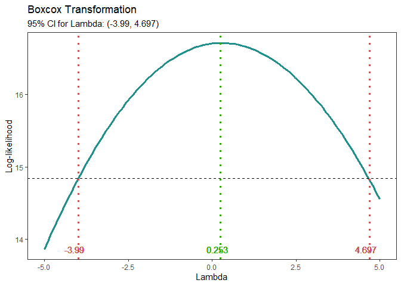
Lambda Plot
Obtain the trace plot of the t-statistics after applying Boxcox transformation across a specified sequence of lambda values
model <- lm(s2 ~ (A+B+C)^2,data=original_epitaxial)
lambda_plot(model)
lambda_plot(model, lambda = seq(0,2,by=0.1))
Boxplots
data <- ToothGrowth
data$dose <- factor(data$dose,levels = c(0.5, 1, 2),
labels = c("D0.5", "D1", "D2"))
gg_boxplots(data,response = len,
factor = dose)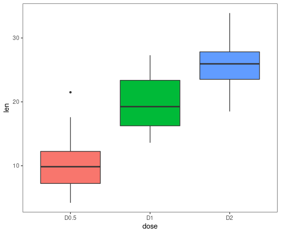
gg_boxplots(data,response = len,
factor = dose,
group_var = supp,
color_palette = 'viridis')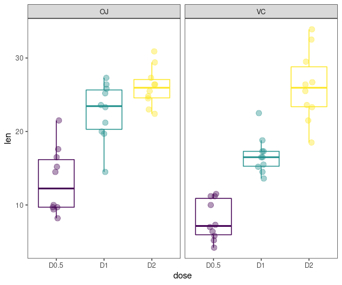
Regression Diagnostic Plots
- Residual vs. Fitted Values
- Normal-QQ plot
- Scale-Location plot
- Residual vs. Leverage
- Cook’s Distance
- Collinearity
The default plots are 1-4
model <- lm(mpg ~ wt + am + gear + vs * cyl, data = mtcars)
diagnostic_plots(model,which_plots=1:6)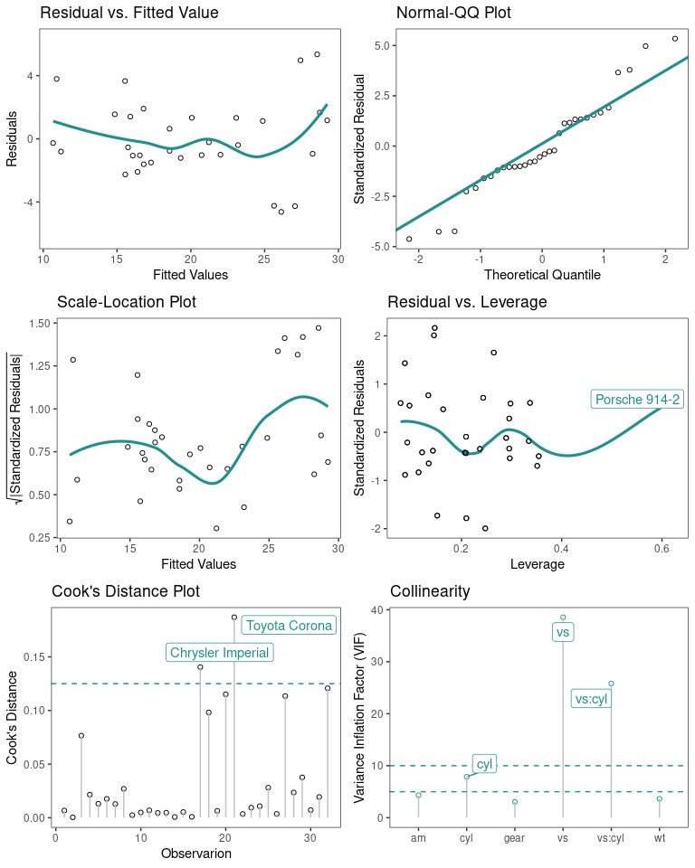
Half-Normal Plot
m1 <- lm(lns2 ~ (A+B+C+D)^4,data=original_epitaxial)
half_normal(m1)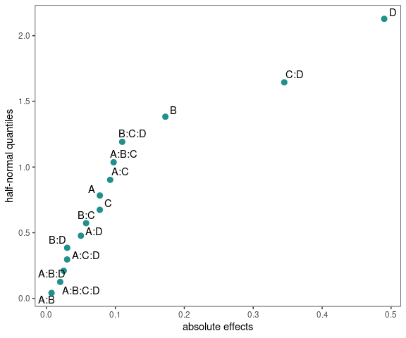
half_normal(m1,method='Zahn',alpha=0.1,
ref_line=TRUE,label_active=TRUE,
margin_errors=TRUE)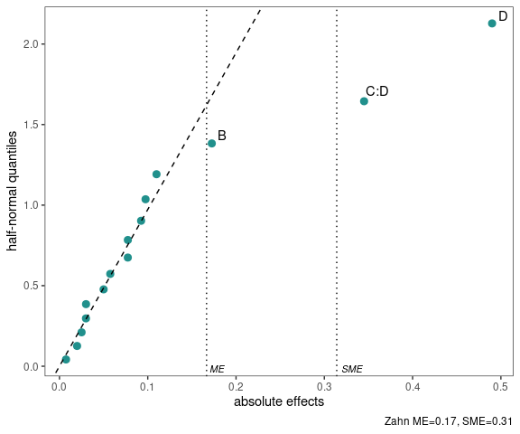
Interaction Effects Plot (Factorial Design)
Interaction effects plot between two factors in a factorial design
interaction_effects(adapted_epitaxial,response = 'ybar',
exclude_vars = c('s2','lns2'))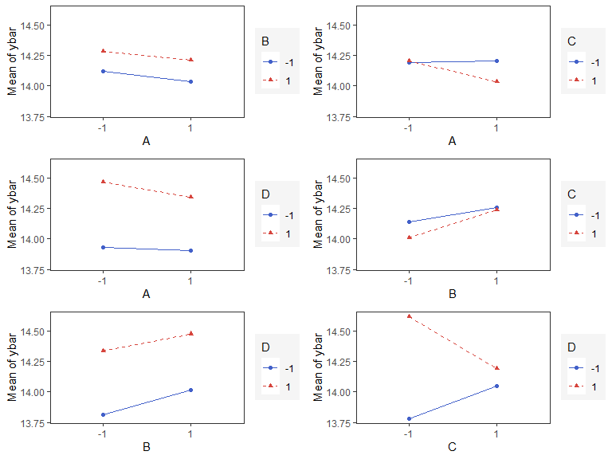
interaction_effects(adapted_epitaxial,response = 'ybar',
exclude_vars = c('A','s2','lns2'),
ncols=3)
Main Effects Plots (Factorial Design)
Main effect plots for each factor in a factorial design
main_effects(original_epitaxial,
response='s2',
exclude_vars = c('ybar','lns2'))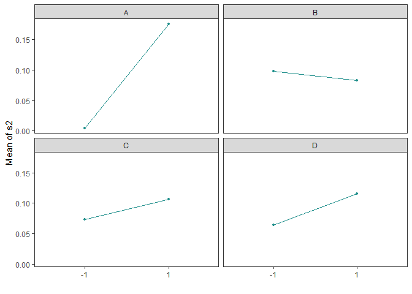
main_effects(original_epitaxial,
response='s2',
exclude_vars = c('A','ybar','lns2'),
color_palette = 'viridis',
ncols=3)
Contour Plots
contour plot(s) that display the fitted surface for an lm or rsm object involving two or more numerical predictors
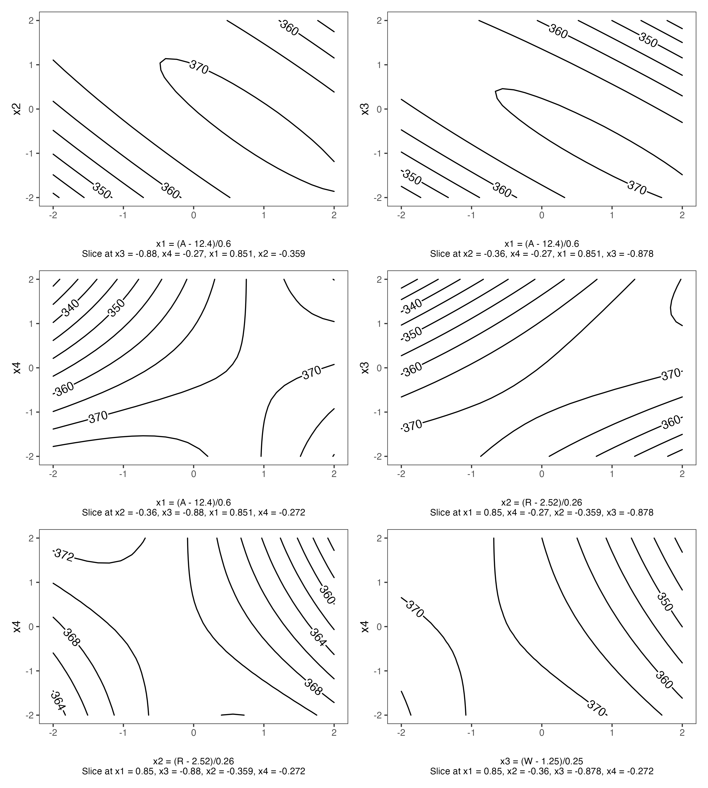
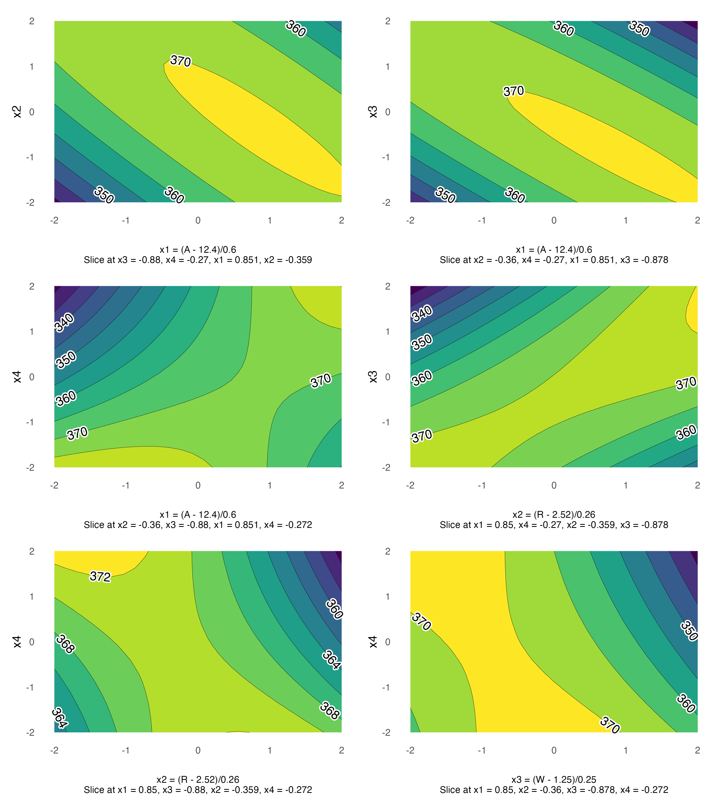
Pareto Plot
Pareto plot of effects with cutoff values for the margin of error (ME) and simultaneous margin of error (SME)
m1 <- lm(lns2 ~ (A+B+C+D)^4,data=original_epitaxial)
pareto_plot(m1)
pareto_plot(m1,method='Zahn',alpha=0.1)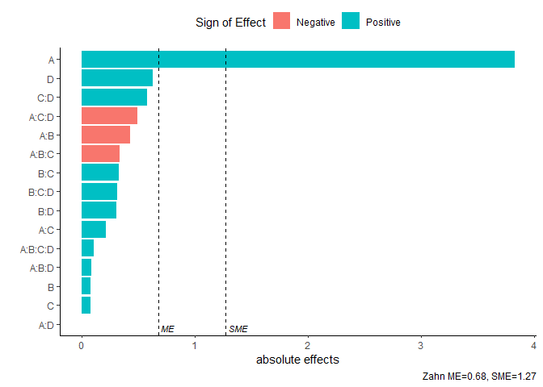
Two Dimensional Projections
This function will output all two dimensional projections from a Latin hypercube design
set.seed(10)
X <- lhs::randomLHS(n=10, k=4)
twoD_projections(X,ncols=3,grid = TRUE)
Lastly, the following datasets/designs are included in ggDoE as tibbles:
-
adapted_epitaxial: Adapted epitaxial layer experiment obtain from the book
“Experiments: Planning, Analysis, and Optimization, 2nd Edition” source -
original_epitaxial: Original epitaxial layer experiment obtain from the book
“Experiments: Planning, Analysis, and Optimization, 2nd Edition” source -
aliased_design: D-efficient minimal aliasing design obtained from the article
“Efficient Designs With Minimal Aliasing” source
Contributing to the package
I welcome feedback, suggestions, issues, and contributions! Check out the CONTRIBUTING file for more details.